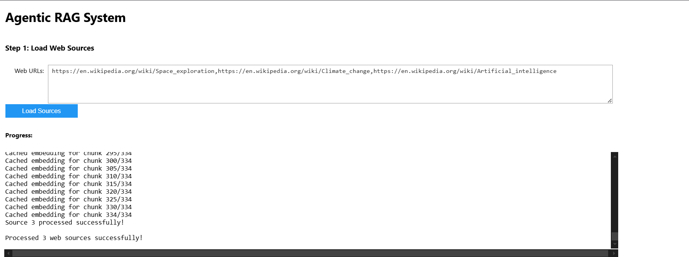
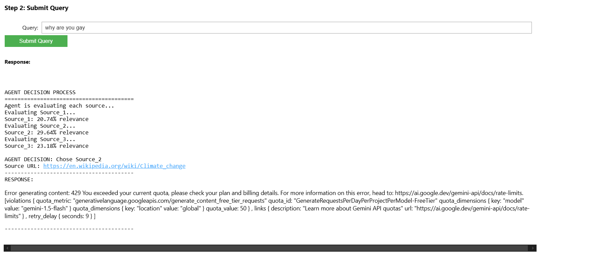
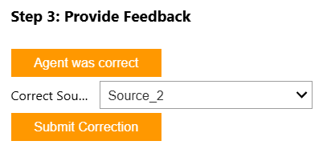
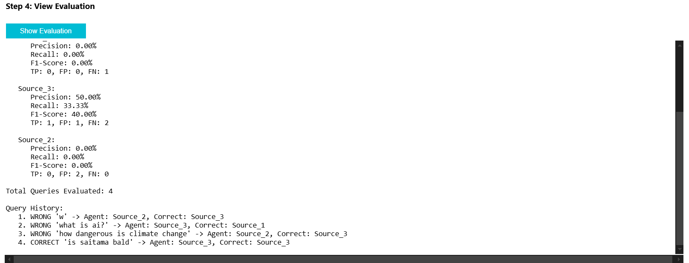
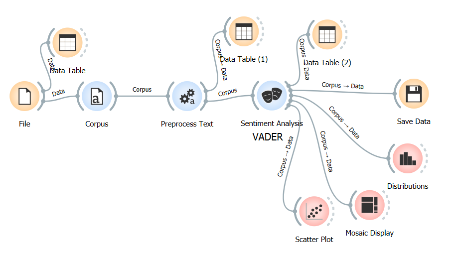
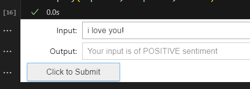
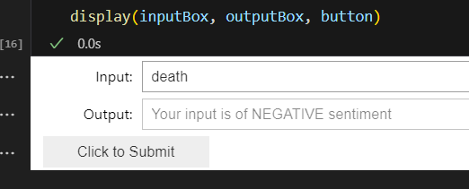

Hello. My background is in Computer Science with specialization in AI from Mapúa University, with hands-on experience building end-to-end ML pipelines, RAG systems, and agentic workflows. During my IT internship at Geoplan Philippines, I worked directly with clients on IoT proof-of-concept deployments, integrated devices into their monitoring platforms, and delivered technical presentations for both internal teams and client stakeholders. I've earned AWS certifications in solutions architecture and AI, and my thesis covers few-shot occupancy detection using Wi-Fi sensing. I love working with a team to build AI solutions that solve real problems. If my background aligns with what you're looking for, I'd love to chat.
AI/ML projects from coursework and research, covering few-shot learning, retrieval-augmented generation, LLM-powered agents, NLP pipelines, and AWS ML data engineering.
# Per-trace ETL: filter bad frames, z-score, window
for r in trace_records:
f = r["data"] # (P, 234, 5) complex → real
# 1. Drop NaN/Inf and all-zero frames
valid = np.all(np.isfinite(f), axis=(1,2))
valid &= ~np.all(f == 0, axis=(1,2))
f = f[valid]
# 2. Per-channel z-score (prevents amplitude skew)
μ = f.mean(axis=(0,1), keepdims=True)
σ = f.std(axis=(0,1), keepdims=True)
σ = np.where(σ == 0, 1.0, σ)
f = (f - μ) / σ
# 3. Non-overlapping temporal windows
W = f.shape[0] // 5
r["windows"] = f[:W*5].reshape(W, 5, 234, 5)27 traces loaded → 27,785 raw frames
M7 9 traces (Wi-Fi 5, 234×3×1)
X7 9 traces (Wi-Fi 6, 250×3×2)
X300 9 traces (Wi-Fi 6, 250×3×2)
After truncation: all → (P, 234, 3, 1)
Complex → real: (P, 234, 3) → (P, 234, 5)
Quality filter: 0 frames removed
Z-score: per-trace, per-channel
Windowing (T=5): 5,729 windows
Output shape: (W, 5, 234, 5) (T, K, C)
Class 0 (empty): 690 windows
Class 1 (occupied): 5,039 windows
M7 648 | X7 4,531 | X300 550class CNNEncoder(nn.Module):
"""4-layer 2D CNN with BN + MaxPool"""
def __init__(self, in_channels=5,
embed_dim=128):
super().__init__()
self.layer1 = conv_block(in_channels, embed_dim)
self.layer2 = conv_block(embed_dim, embed_dim)
self.layer3 = conv_block(embed_dim, embed_dim)
self.layer4 = nn.Sequential(
nn.Conv2d(embed_dim, embed_dim, 3,
padding=1, bias=False),
nn.BatchNorm2d(embed_dim),
nn.ReLU(inplace=True),
nn.AdaptiveAvgPool2d((1, 1)))
class FocalLoss(nn.Module):
"""FL(p_t) = -α(1-p_t)^γ log(p_t)
Down-weights majority class to handle
690 vs 5,039 class imbalance."""Device Accuracy F1 AUC-PR
────── ──────── ──── ──────
M7 0.660 0.796 0.964
X7 0.786 0.869 0.912
X300 0.759 0.853 0.972
────── ──────── ──── ──────
ALL 0.735 0.839 0.949
Total params: 114,114
High recall (0.973) — catches most
occupied windows despite class imbalancedef proto_loss_and_acc(encoder, episode, device):
"""Support → prototypes → neg. squared-
Euclidean distance → softmax CE loss"""
prototypes = torch.stack([
s_emb[sy == cls].mean(dim=0)
for cls in [0, 1]])
dists = torch.cdist(
q_emb.unsqueeze(0),
prototypes.unsqueeze(0),
p=2).squeeze(0) ** 2
loss = F.cross_entropy(-dists, qy)
preds = dists.argmin(dim=1)
return loss, float((preds == qy).float().mean())Cross-position grand mean:
K=1 AUC-PR 0.949 | F1 0.674
K=3 AUC-PR 0.968 | F1 0.806
K=5 AUC-PR 0.977 | F1 0.843
K=10 AUC-PR 0.980 | F1 0.846
Wilcoxon signed-rank (Bonferroni α=0.0167):
K=1 vs K=3: W=4.0 p=0.0137 ✓
K=3 vs K=5: W=2.0 p=0.0117 ✓
K=5 vs K=10: W=2.0 p=0.0117 ✓
All three significant — monotonic
improvement on PR-AUC with each K
M7 best fold (K=10, Fold 2):
Accuracy 0.894 | Precision 1.000
Recall 0.845 | F1 0.912
AUC-PR 0.996End-to-end ML pipeline for binary occupancy detection using Wi-Fi Beamforming Feedback Information (BFI). Built a full ETL pipeline — quality filter, per-channel z-score normalization, and temporal windowing — producing 5,729 windows from 27 traces across 3 smartphone models.
Trained a supervised CNN baseline with Focal Loss and a WeightedRandomSampler to handle 1:7.3 class imbalance, achieving 94.9% AUC-PR. Then built a ProtoNet few-shot learner with Adam optimizer (lr=0.001, 100 epochs), session-level random undersampling, and stratified episode sampling.
Cross-position AUC-PR reached 98.0% at K=10 with 95% less labeling cost than retraining from scratch — all gains statistically significant via Bonferroni-corrected Wilcoxon signed-rank tests.
def sel_source(query, output_widget):
query_embedding = embedder(query)
best_source, best_sim, best_index = "", 0.0, 0
for i, doc in enumerate(documents_data):
sim = cos_similarity(
query_embedding,
doc['summary_embedding']
)
if sim > best_sim:
best_sim = sim
best_source = doc['name']
best_index = i
return best_source, best_sim, best_indexAGENT DECISION PROCESS
========================================
Evaluating Source_1...
Source_1: 92.41% relevance
Evaluating Source_2...
Source_2: 34.17% relevance
Evaluating Source_3...
Source_3: 18.03% relevance
AGENT DECISION: Chose Source_1
Source URL: https://en.wikipedia.org/wiki/...def embedder(text):
response = genai.embed_content(
model="models/text-embedding-004",
content=text
)
return np.array(response['embedding'])
def store_web(urls, output_widget):
for url in urls:
text = web_fetcher(url)
chunks = chunky(text)
for chunk in chunks:
key = get_chunk_key(chunk)
if key in embedding_cache:
emb = embedding_cache[key] # cached
else:
emb = embedder(chunk) # API callProcessing source 1/3: https://en.wikipedia.org/wiki/Space_exploration
Split into 42 chunks
Generating chunk embeddings...
Generated embedding for chunk 5/42
Generated embedding for chunk 10/42
...
Cached embedding for chunk 42/42
Source 1 processed successfully!def generate_response(query, chunks, source):
context = "\n\n".join(chunks)
prompt = (
"Answer using ONLY this context:\n"
f"Context: {context}\n"
f"Question: {query}"
)
model = genai.GenerativeModel(
"models/gemini-1.5-flash-latest"
)
response = model.generate_content(prompt)
return response.textRESPONSE:
----------------------------------------
Space exploration is the ongoing discovery
and study of celestial structures and outer
space by means of space technology. It involves
the observation and exploration of celestial
bodies, the development of new technologies,
and the potential for human colonization of
other planets...
----------------------------------------
Answer derived from: Source_1
Relevance: 92.41%



A Retrieval-Augmented Generation system where an agent evaluates multiple web sources using cosine similarity on embeddings, selects the most relevant source, retrieves top chunks, and generates grounded responses using Google Gemini.
Requires a Google AI Studio API key (free at aistudio.google.com)
video_url = "https://youtube.com/watch?v=3JW732GrMdg"
db = create_db_from_youtube_video_url(video_url)
query = "what is this video about?"
response, docs = get_response_from_query(db, query)
print(response)This video is about using PostgreSQL in web
development and exploring various unorthodox
ways to utilize PostgreSQL for different tasks.
The video highlights advantages such as working
with unstructured data using JSON, implementing
cron jobs, utilizing vector data types for AI
applications, and building a full-text search
engine.video_url = "https://youtube.com/watch?v=_IOh0S_L3C4"
db = create_db_from_youtube_video_url(video_url)
query = "what is AI flaw that the video talks about?"
response, docs = get_response_from_query(db, query)
print(response)The video is talking about the flaw in AI models,
specifically the current machine learning
algorithms. The flaw is that there is a limit to
the current models' capabilities, and they
cannot be trained to reach perfection due to the
lack of sufficient training data.video_url = "https://youtube.com/watch?v=P-TANCVoHlc"
db = create_db_from_youtube_video_url(video_url)
query = "why isn't technology fun anymore?"
response, docs = get_response_from_query(db, query)
print(response)Technology isn't fun anymore because many
advancements are driven by manipulation,
surveillance, and profit rather than a genuine
desire to solve problems. The speaker mentions
advancements often feel predatory and designed
to be addictive rather than enjoyable additions
to one's life.An interactive chatbot that ingests YouTube video transcripts, splits them into chunks, builds a FAISS vector store, and answers questions using similarity search + OpenAI GPT.
Requires an OpenAI API key
embeddings = OpenAIEmbeddings()
text = "Let's play video games!"
text_embedding = embeddings.embed_query(text)
print(f"Sample: {text_embedding[:5]}...")
print(f"Length: {len(text_embedding)}")Sample: [-0.0104, -0.0160, 0.0022,
-0.0244, -0.0153]...
Length: 1536template = """
I really want to learn the {language} language.
How should I do it?
Respond in one short sentence
"""
prompt = PromptTemplate(
input_variables=["language"],
template=template,
)
final_prompt = prompt.format(language='Japanese')
print(llm(final_prompt))Immerse yourself in the language through
classes, online resources, and practice
with native speakers.response_schemas = [
ResponseSchema(name="computer_game",
description="A computer game"),
ResponseSchema(name="game_definition",
description="Explanation of the game"),
]
output_parser = (
StructuredOutputParser
.from_response_schemas(response_schemas)
)
llm_output = llm(prompt.format(user_input="Dota 2"))
output_parser.parse(llm_output){
"computer_game": "Dota 2",
"game_definition": "Dota 2 is a popular
multiplayer online battle arena (MOBA) game
developed by Valve Corporation..."
}A hands-on reference covering LangChain fundamentals: chat models, prompt templates, few-shot example selectors with semantic similarity, structured output parsing, document loaders, text splitters, vector stores, and retrieval QA chains.
Requires an OpenAI API key



Click image to enlarge
A sentiment analysis tool that classifies text as positive, negative, or neutral using NLP techniques. Built as part of coursework exploring natural language processing and text classification using Orange.
# SageMaker Data Wrangler pipeline
# Target Leakage (ROC per feature)
fnlwgt: ROC = 0.50 # drop
native_country: ROC = 0.50 # drop
education: ROC = 0.89 # keep
occupation: ROC = 0.87 # keep
# Data Quality Report
Features: 14 | Missing: 4.8%
Duplicates: 24 rows | Outliers: cap_gain > 80K1. Drop columns: fnlwgt, native_country
2. Drop missing: occupation, workclass
3. Drop duplicates: 24 rows removed
4. Strip whitespace: 8 categorical columns
5. Binary encode: ≤50K→1, >50K→0
6. Remove outliers: capital_gain [0, 80K]
7. Ordinal encode: education, occupation
8. One-hot encode: sex, race, relationship,
marital_status, workclass
9. Move target: income → first column
10. Split: 70/20/10 train/test/val# Connect SageMaker Studio → EMR
# via SparkMagic PySpark kernel
# Query Apache Hive table on EMR
df = spark.sql("""
SELECT education, occupation,
COUNT(*) as cnt,
AVG(capital_gain) as avg_gain
FROM adult_data
GROUP BY education, occupation
ORDER BY cnt DESC
""")
df.show()+----------+-----------+-----+---------+
| education| occupation| cnt| avg_gain|
+----------+-----------+-----+---------+
| HS-grad | Craft-repair|4942| 529.21|
| Some-col | Prof-specialty|3287| 2105.84|
| Bachelors| Exec-managerial|3189| 3012.18|
+----------+-----------+-----+---------+
# Exported to S3: train/test/val splits# Ordinal: ordered categories
education_num: 9→0, 10→1, ... 13→4
education: HS-grad→0, Bachelors→1, ...
occupation: Adm-clerical→0, ...
# One-hot: equal-value categories
sex: [Female=1,0, Male=0,1]
race: [Amer-Indian=1,0,0,0,0, ...]
workclass: [9 binary columns]s3://bucket/scripts/data/
├── train/
│ └── adult_data_train.csv (70%)
├── test/
│ └── adult_data_test.csv (20%)
└── validation/
└── adult_data_val.csv (10%)
Processing jobs: 3 SageMaker jobs
Kernel: SparkMagic PySparkEnd-to-end data preparation pipeline for income prediction using SageMaker Data Wrangler. Analyzed data quality, detected target leakage via ROC metrics, and built a 10-step transformation chain including column drops, missing value handling, duplicate removal, ordinal/one-hot encoding, and outlier removal.
Connected SageMaker Studio to an Amazon EMR cluster via SparkMagic PySpark kernel to query Apache Hive tables at scale. Exported cleaned train/test/validation splits to S3 for downstream model training.